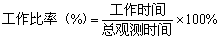

工作抽样的用途
对于具有重复性质的、循环周期较短的作业，采用时间研究制定工时定额是一种有效的方法。但现实中还有许多作业，如维修、材料搬运以及许多办公室工作，都具有循环周期大和重复频率低的特点，对这类作业制定工时定额或任务定额，就不适合于采用时间研究这种直观观测方法，而需要采用称为工作抽样的方法。工作抽样还可以用来制定工时定额，但其主要的用途还是用于确定某项作业中特定工作要素的时间和比例，以及其他活动的时间和比例，这些资料对于提高整体作业的生产率是非常重要的。工作抽样在实际中应用很广，主要用于以下两方面。
(一)工作改善
利用工作抽样，可调查出操作者或机器的工作比率与空闲比例。即

对空闲比率进行研究时，可根据空闲部分的组成，细分成项目进行观测记录，找出问题并进行改善。
(二)制定标准时间
用工作抽样制定高阶次工作的标准时间，具有省时、经济的特点。
用工作抽样制定标准时间，除了求出工作比率，尚需赋予评比与宽放。宽放值的赋予和 秒表时间研究类似，可实地观察计算，亦可政策性地赋予。而评比，一般利用“绩效指标”来决定。绩效指标是指某产量应消耗的正常时间与实际消耗时间之比。即
则：